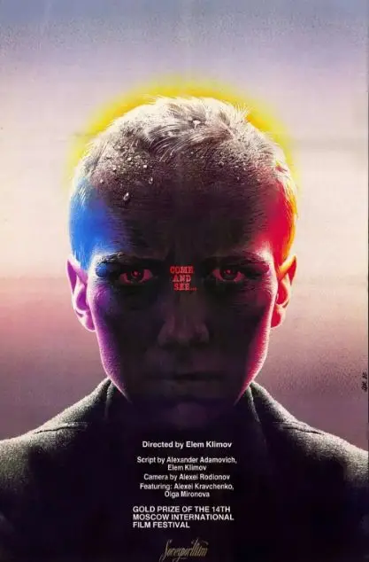
关于战争，优秀的电影很多。
其中，有这么一部冷门神作。
没有《全金融外壳》那样正面血腥的战争描写，也没有《辛德勒的名单》那样竭力在黑暗中寻找温暖的人性。
更没有像《细细的红线》那样用诗意和独白去表现战争的荒谬。
而只是透过一个脸庞、一双眼睛，却永远将战争的恐惧记录了下来。
这部电影就是诞生于1985年的苏联电影《自己去看》。
电影名字的灵感来源于圣经启示录的6章7-8节：
当他打开第四个印章时，我听到第四头野兽的声音说， 来看看！ 我看了看，看见一匹苍白的马儿，他坐在他身上的名字是死亡，地狱跟着他。
并且在地上四分之一地赐给他们力量，要用刀杀死，饥饿，死亡，和地上的走兽。
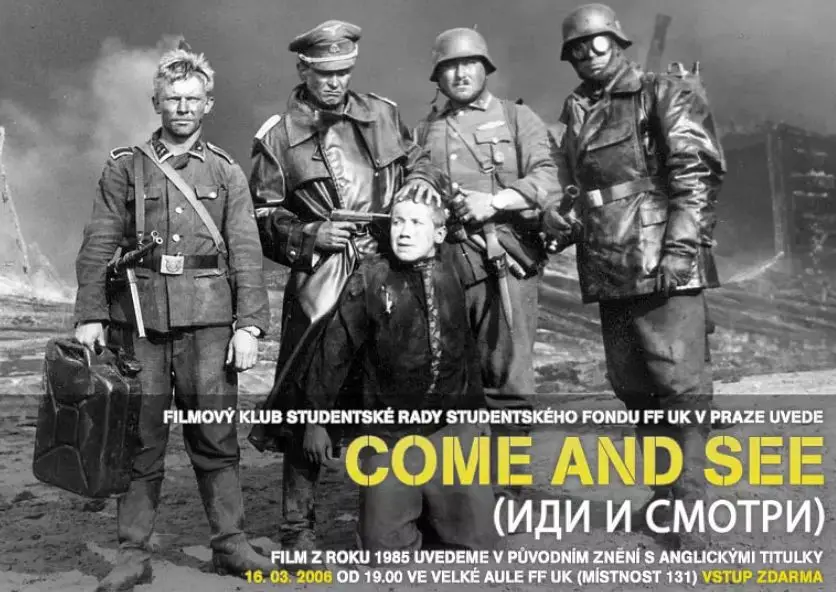
导演意图通过作品让人看一看法西斯侵略战争下的人间地狱。
该片被称为最残酷的电影之一。
上映后曾引起极大的轰动，纽约时报评价它是“苏联电影的最高成就”。
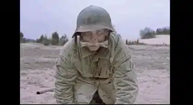
电影刚开始，一个面目狰狞的小孩直接打破电影的第三堵墙，直勾勾地对观众说：你笑什么，你不会再笑多久的。
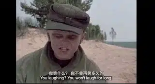
这句话不仅仅是说给观众听的。
更像是针对电影里的男主角（一个十四岁的少年）所发出的警告和预言：接下来发生的事情会让你绝望。
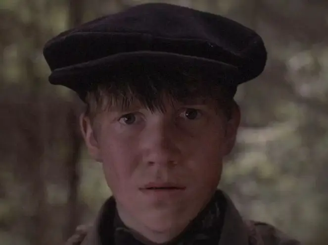
原来这两个小孩在战壕里四处挖埋在土下的枪。
有了枪，他们便可以参加游击队，像大人一样打击侵入苏联的德国法西斯分子。
很快，男主角便挖出了一杆枪。
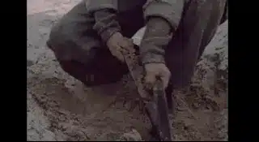
虽然妈妈以死要挟，竭力阻止他加入游击队，但是这个初生牛犊似乎势在必行。
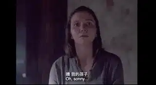
终于，他成为了游击队里的一个后勤保卫兵。
接下来仅仅数日，一个散发着稚气的少年就变成了一个形容枯槁、面部扭曲、眼睛无光的“老人"。
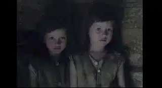
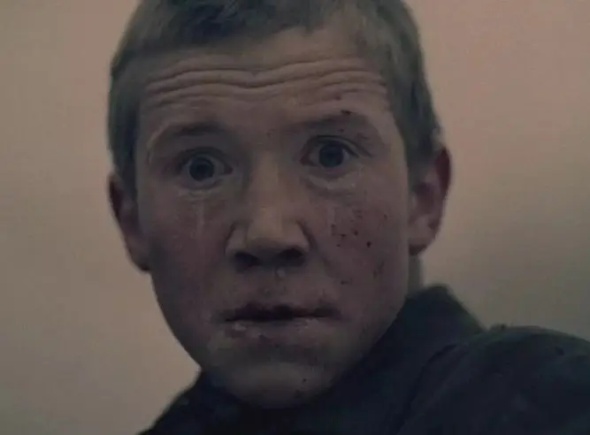
这几天里，男孩的妈妈和双胞胎妹妹被杀害。
甚至，德军在一所教堂里活活烧死了628名手无寸铁的平民。
这些恐怖的场面，导演都没有花大篇幅去正面表现。
当男孩回家发现自己的家人不在的时候，他以为家人们躲在了远处的沼泽地里。
在他和一个女孩跑往沼泽地的路上。
女孩回头无意中看到了墙外堆满的尸体。
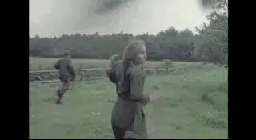
只是惊鸿一瞥的几秒，残酷程度远胜于刻意安排的血肉横飞。
而当男孩在沼泽地一无所获的时候，女孩终于才告诉他所发生的惨剧。
男孩无法接受，他悲痛欲绝甚至要发疯的表情写满了对战争的恐惧。
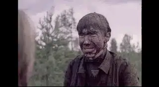
而最令男孩绝望的是。
他要眼睁睁地看着纳粹将几百名平民活活烧死。
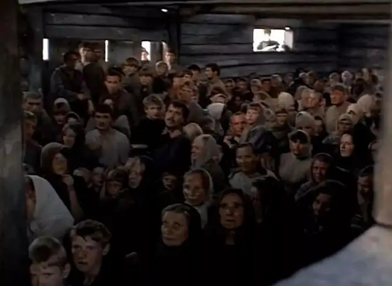
在那个挤满生命的教堂里。
那些丧心病狂的纳粹，将所有人反锁在教堂里。
先是放火。
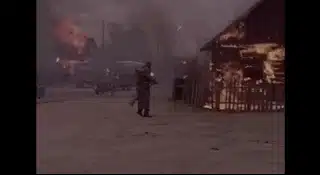
再是投掷炸弹。
然后是机枪扫射。
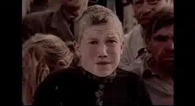
震破天际的哭喊声在这些大火里逐渐消失。
不断拍动的大门也没有了响动。
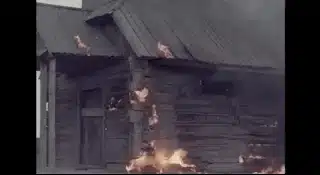
男孩绝望的向天空仰望。
可是，他看到的不是上帝，而是纳粹的轰炸机。
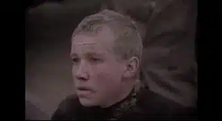
在这场暴行里，这些纳粹分子在屠戮里扭曲成可怕的魔鬼。
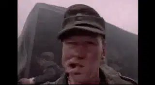
暴行结束后，竟然用枪顶着男孩的头合影留念。
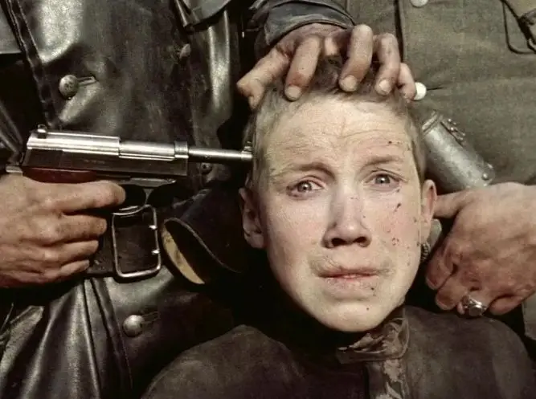
没有愧疚，没有恐惧，更没有对生命的敬畏。
这就是地狱！！
导演也通过刺耳、荒诞的音效来强化“地狱”的氛围。
刚刚引入的斯坦尼康更成为导演带观众漫游“地狱”的得力工具。
很多运动长镜头看似随意却非常有深意，既有着独特的形式美感和不断变化的景别、构图，又完美地匹配着故事的情绪。
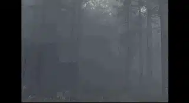
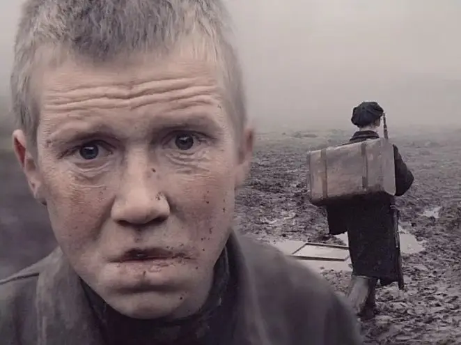
同时，导演通过很多物像和动物来隐喻战争的恐怖。
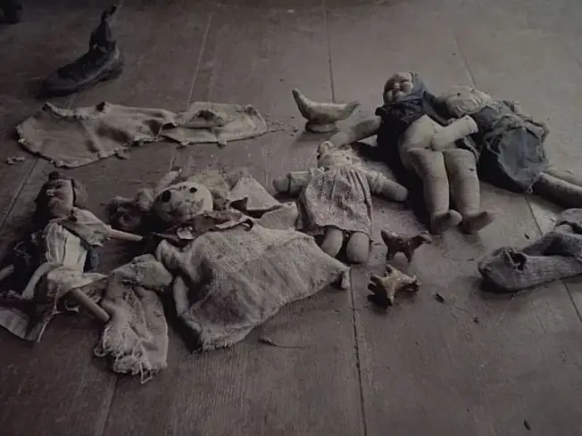
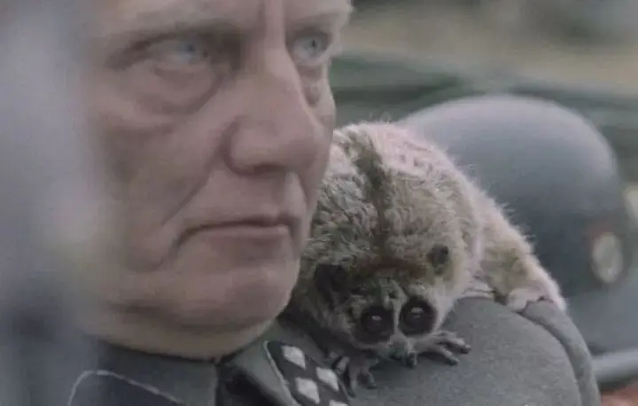
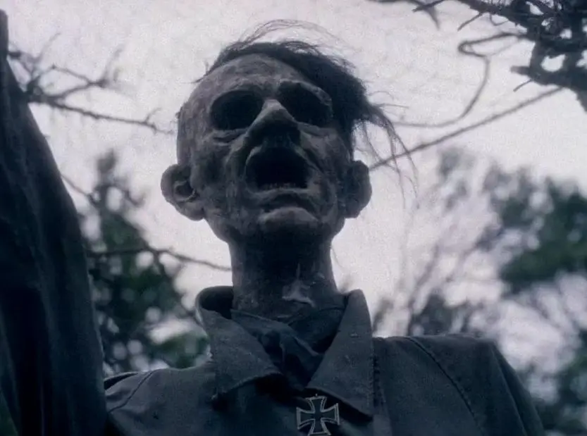
| 戏谑希特勒
这样一个“地狱”里。
男孩充满朝气的生命力被残酷摧残殆尽，变成了一个老人。
但是导演结尾的处理堪称神来之笔，在绝望中埋入了希望。
当男孩看到掉在水里的希特勒画像时。
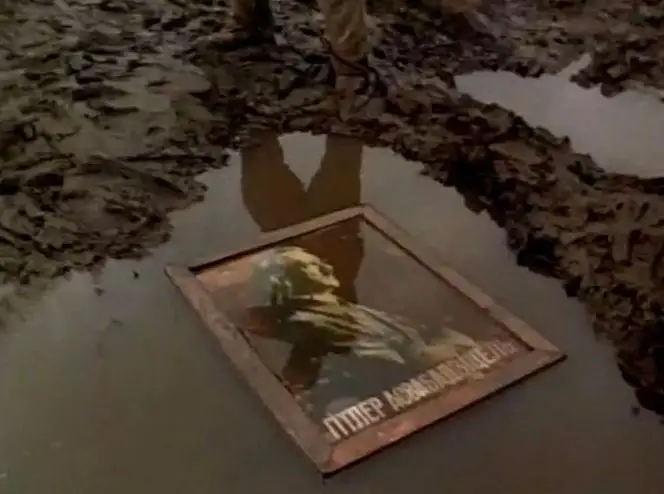
悲愤的他拿起枪朝着画像开枪。
每开一枪，历史画面便开始倒退。
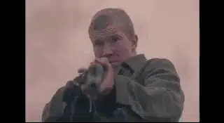
被战争毁坏的建筑恢复成原来的模样。
空中投下的炸弹又收了回去。
空袭波兰的战斗机倒回到了军营。
战争中死去的平民又活了过来。
.......
男孩连开了五枪。
直到历史倒退到希特勒刚出生的时候。
男孩流着眼泪注视着作为小孩的希特勒和他母亲的合影。
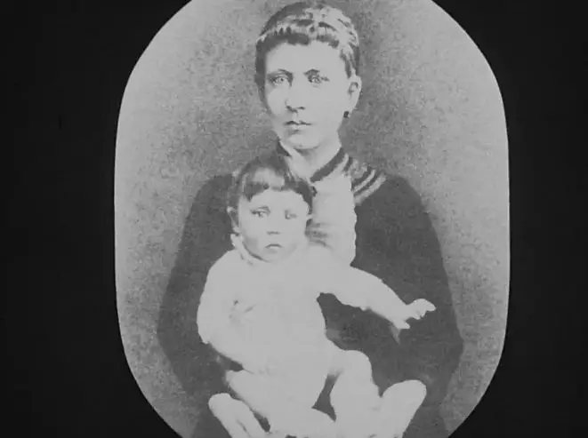
如果再开一枪。
希特勒将会消失。
男孩也将以战争之名杀害另一个小孩。
男孩流着眼泪放下了枪。
因为他不忍心看着一个妈妈失去自己的孩子。
他太清楚那是一种怎样的绝望和无助。
电影最后这个神奇的蒙太奇镜头令人动容，导演也借此表达了他对战争暴行的强烈控诉以及对和平的向往。
同时，男孩绝望之处闪现出的人性光辉不仅让人感动，更让我们看到了作为人的尊贵和伟大。
这部电影非常特别。
导演没有选择用巧妙的故事或者言语来让我们铭记和反思历史。
而只是给了我们一张绝望无助的脸。
也许导演太清楚我们最擅长的就是遗忘历史和重复悲剧。
所以，他用镜头将平民面对战争时最恐惧的瞬间抓了下来。
那双眼睛、那个瞬间如此深入人心。
以至于就是我们忘记了过去发生了什么，也一定会记住那张直勾勾望着你的绝望无助的面孔。
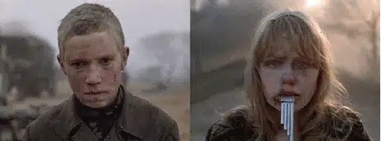
它在告诉你，我们的傲慢、我们的狂妄、我们的罪有多可怕。
如果我们不能从历史中学到这一点，不能从惨痛中谦卑的悔改。
上帝还会让我们走向疯狂。
关注并回复：自己去看
获取电影资源
相关推荐：
100双绝望的眼睛
《超脱》| 我的灵魂失语了
这里没有挑逗你眼目情欲的小鲜肉
也没有挑动你肉体情欲的段子
更没有膨胀你今生骄傲的鸡血
我们只在乎那些最质朴真诚的作品
在那里我们才能恢复真正的想象力
我们也坚信这才是我们真正需要的

ID:Six_hundred_hits
长按二维码，一键关注
【六百击】
-END-
电影评论
尽情分享朋友圈

苹果打赏
通道
小提示：文末广告是腾讯配送广告，内容与本号无关，但您的每次点击（无需反复点）都会给平台带来几毛收益，欢迎您点击支持六百击。